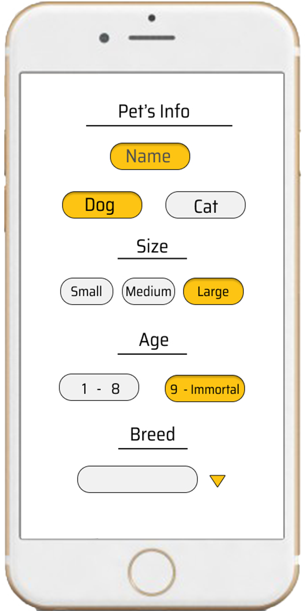
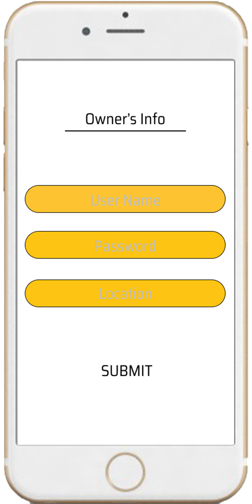
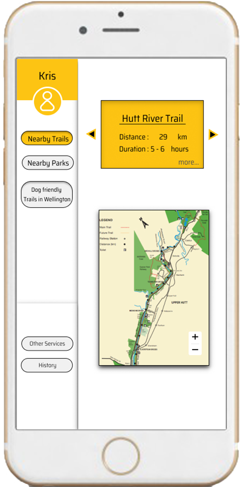
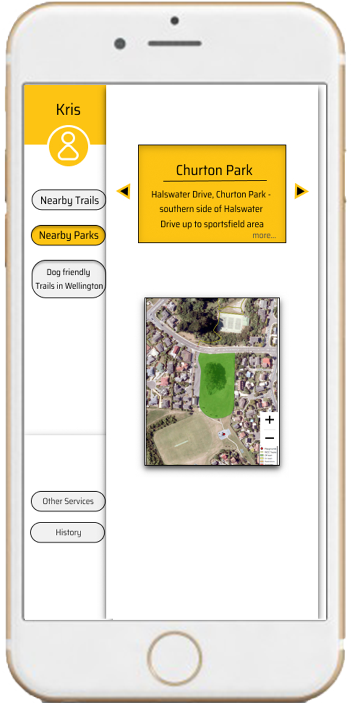
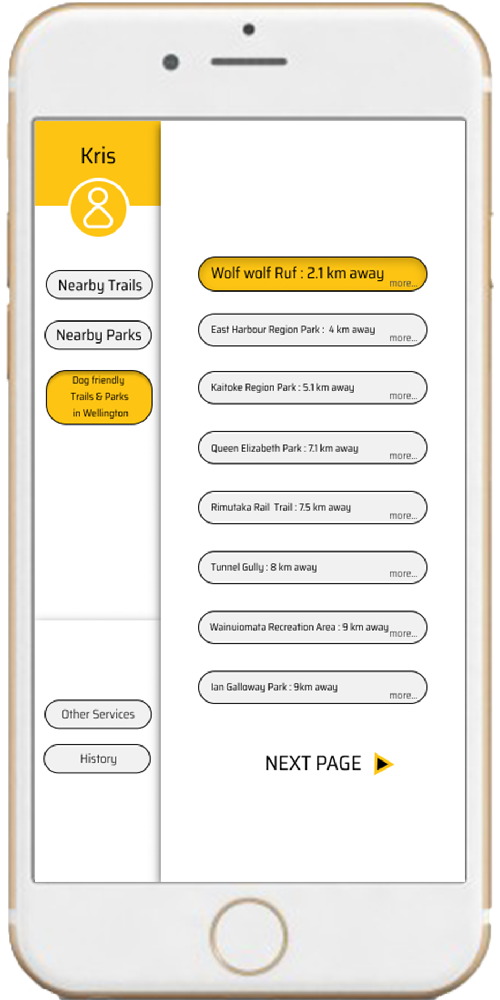
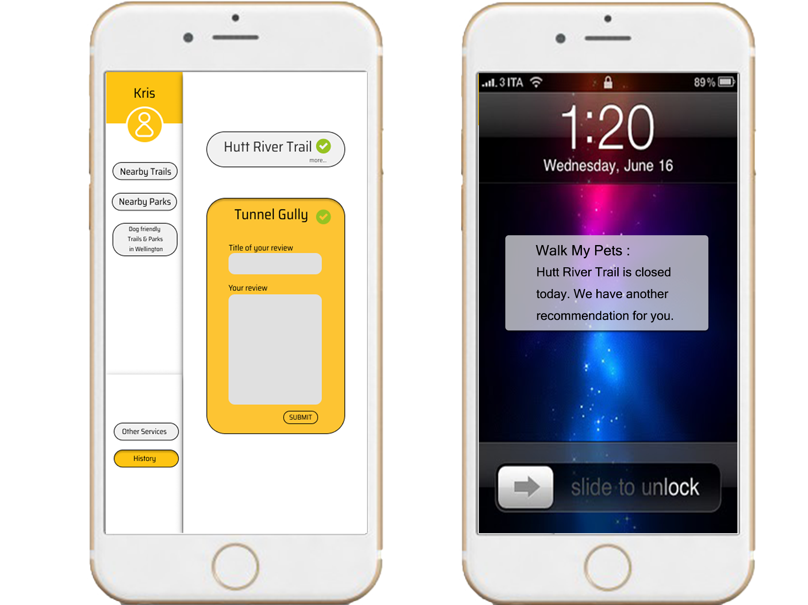
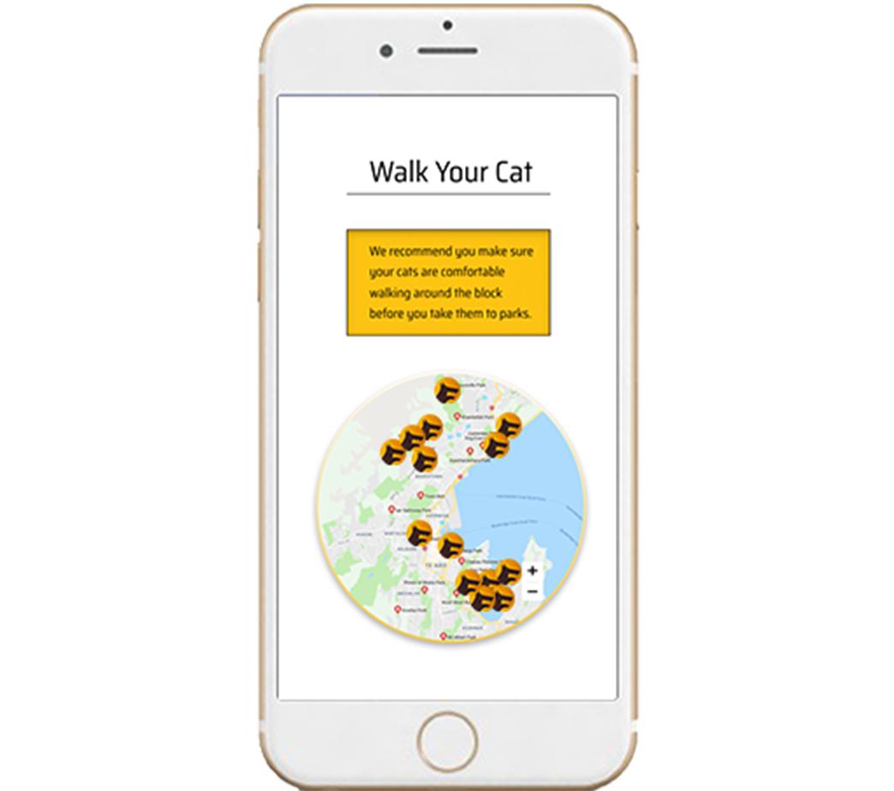

PETS WALKING MADE EASY
WALK MY PETS is a mobile app that can make pets walking easier by giving users recommendations on pets friendly walking trails and parks.
Step 1
Step 2
Step 3


EFFORTLESS:
3 easy and simple steps through WALK MY PETS app to sign-up. Use WALK MY PETS as a trail guide, and you can plan your next walking trail advanture with your pets EFFORTLESS.
RECOMMENDATION



THE "BEST OF" :
WALK MY PETS gives recommendations to users for the nearest walking trails and parks that suitable for dogs or cats.
Recommendations are depending on:
- Size
- Age
- Breed
- Location
OTHER SERVICES
- Dog Walking Services -
- Pets Registration -
- Veterinary Service -
- SPCA -
HISTORY & REVIEWS & NOTIFICATION
- Check History -
-Review A Place-
- Sharing -
- Notification -

FOR CAT LOVERS
WALK MY PETS also give suggestions on where to take cats for a walk for cat lovers. This app gives recommendations on parks where generally have less dogs around, so you can your kitty can enjoy a nice walk together.
